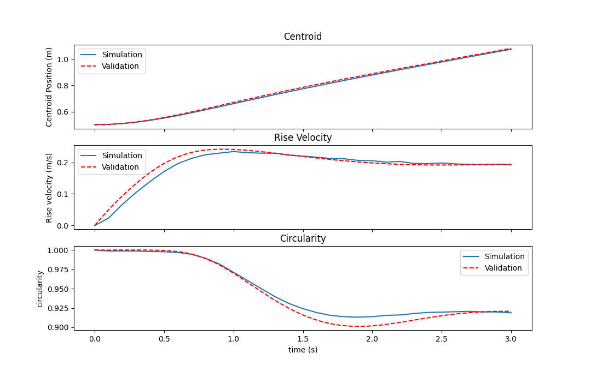

Description: Multiphase 2D bubble rise simulation
Reference Paper: Quantitative benchmark computations of two-dimensional bubble dynamics
Model
The model geometry was created in blockMesh. The geometry is a cube (with front & back sides being empty).
The width of the cube is 1m and height is 2m. The depth was chosen to be 0.2m.
The bubble was initialized at (0.5, 0.5, 0) and it had a radius of 0.25m.
Meshing
The meshing was done using the blockMesh utility in OpenFOAM.
The mesh had 320000 hexahedral cells and 642402 points.
Physics
The incompressible volume-of-fluid method is used in this case for free surface modeling of the bubble-liquid interface. This method is useful when the interface between the two phases is important to track. It is represented by the following equations
Continuity equation $$\frac{\partial u}{\partial x} + \frac{\partial v}{\partial y} + \frac{\partial w}{\partial z} = 0$$
Momentum conservation equations $$ x: \frac{\partial u}{\partial t} + u\frac{\partial u}{\partial x} + v\frac{\partial u}{\partial y} + w\frac{\partial u}{\partial z} = -\frac{1}{\rho_{mix}} \frac{\partial P}{\partial x} + \frac{\mu_{mix}}{\rho_{mix}}\left(\frac{\partial ^2 u}{\partial ^2 x} + \frac{\partial ^2 u}{\partial ^2 y} + \frac{\partial ^2 u}{\partial ^2 z} \right) + g_x + F_{s,x}$$
$$ y: \frac{\partial v}{\partial t} + u\frac{\partial v}{\partial x} + v\frac{\partial v}{\partial y} + w\frac{\partial v}{\partial z} = -\frac{1}{\rho_{mix}} \frac{\partial P}{\partial y} + \frac{\mu_{mix}}{\rho_{mix}}\left(\frac{\partial ^2 v}{\partial ^2 x} + \frac{\partial ^2 v}{\partial ^2 y} + \frac{\partial ^2 v}{\partial ^2 z} \right) + g_y + F_{s,y}$$
$$ z: \frac{\partial w}{\partial t} + u\frac{\partial w}{\partial x} + v\frac{\partial w}{\partial y} + w\frac{\partial w}{\partial z} = -\frac{1}{\rho_{mix}} \frac{\partial P}{\partial z} + \frac{\mu_{mix}}{\rho_{mix}}\left(\frac{\partial ^2 w}{\partial ^2 x} + \frac{\partial ^2 w}{\partial ^2 y} + \frac{\partial ^2 w}{\partial ^2 z} \right) + g_z + F_{s,z}$$
Where,
$$ \rho_{mix} = \alpha \rho_{liq} + (1-\alpha)\rho_{gas} $$ and
$$ \mu_{mix} = \alpha \mu_{liq} + (1-\alpha)\mu_{gas} $$
Here, $\alpha$ is the volume fraction and Fs,x, Fs,y and Fs,z are the surface tension forces given by $F_s = \sigma \kappa \nabla \alpha$
where, $\kappa = \nabla \cdot (\frac{\nabla \alpha}{|\nabla \alpha|})$
Simulation
The case was simulated using OpenFOAM using the incompressibleVoF solver.
The volume fraction in the liquid phase (α) was initialized with a value 0 at the above mentioned bubble location while it was initialized with a value 1 elsewhere.
The default values for alpha.water was set to 1 everywhere.
setFields : The value for alpha.water was set to 0 in the cells for a cylinder -> p1 = (0.5, 0.5, -0.2), p2 = (0.5, 0.5, 0.2), radius = 0.25.
| Property | Value |
|---|---|
| $\nu_{liq}$ | 0.01 |
| $\nu_{gas}$ | 0.01 |
| $\rho_{liq}$ | 1000 |
| $\rho_{gas}$ | 100 |
| Surface Tension coefficient ($\sigma$) | 24.5 |
| Gravitational acceleration ($g_y$) | 0.98 |
These properties lead to a Reynolds Number (Re) = 35 and Eötvös number (Eo) = 10.
Boundary Conditions
| Parameter | internalField | leftRight | bottomTop | frontBack |
|---|---|---|---|---|
| alpha.water | Initialized using setFields | zeroGradient | zeroGradient | empty |
| Velocity | uniform (0 0 0) | slip | noSlip | empty |
| Pressure (p_rgh) | uniform 0 | fixedFluxPressure | fixedFluxPressure | empty |
The transient laminar flow simulation was run for a total of 3 seconds with a timestep of 1e-5 s.
The solutions were obtained using the Pressure-Implicit with Splitting of Operators (PISO) algorithm with 3 correctors and 1 outer corrector.
The relaxation factor for p_rgh was set to 0.3.
Validation
The results were validated using the already available validation dataset available here.
The dataset c1g1l7 was used for the validations.

As it can be seen from the above image. The bubble centroid, rise velocity and circularity were compared. The simulation results are very close compared to the validation results.
Back to Database